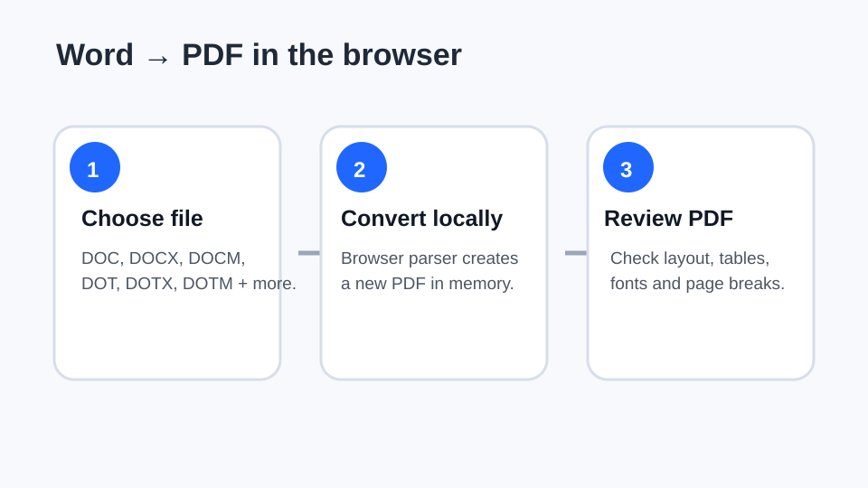
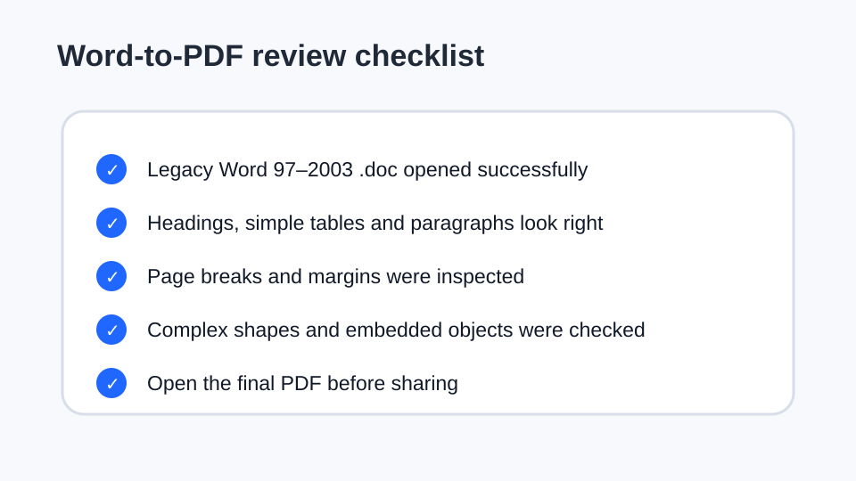

How to convert Word documents to PDF
DOC and DOCX files are common source documents for PDFs. The safest workflow is to convert a copy, review page breaks and layout, and keep the original Word file unchanged.
Updated September 27, 2026 · Reviewed by FreePDF Tools

Which Word formats can you convert?
FreePDF Tools accepts Microsoft Word DOC 97–2003, DOCX, DOCM, DOT, DOTX and DOTM files, along with common ODT, RTF, TXT and HTML inputs. Macro code is not executed during conversion.
The legacy .doc workflow uses a browser-based MS-DOC parser. Very unusual, damaged or encrypted files may still fail, so keep the original source document.
How to convert DOC or DOCX to PDF
- Open the Word to PDF converter.
- Select a DOC, DOCX or another supported document.
- Choose A4 or US Letter and the body font size when needed.
- Enter a useful output filename.
- Convert the document and download the generated PDF.
- Open the PDF and inspect the pages before sharing it.
Why can Word-to-PDF layout change?
Word supports a large range of layout features. A browser-based converter can reproduce ordinary text, headings and simple tables, but floating shapes, tracked changes, embedded fonts, complex tables and advanced page objects can require manual review.
Think of the browser converter as a practical document-to-PDF workflow rather than a guarantee of identical rendering to Microsoft Word's desktop print engine.
What should you check in the PDF?
Check the title page, headers and footers, tables, page breaks, images, signatures and any content close to the page edge. A page can look fine in the source editor and still need adjustment after conversion.

Can Word 97–2003 .doc files be converted?
Yes. The supported legacy Word parser handles many standard Office 97–2003 .doc files locally. Password-protected, damaged or unusual files may not parse successfully. When that happens, first open the file in a trusted desktop editor and save a clean copy before retrying.
Privacy and local processing
The supported conversion workflow runs in the browser. The source document and generated PDF stay in the page's local processing flow rather than being sent to an application server for conversion.
Convert a Word document now
Use the local converter for DOC, DOCX and supported document formats.